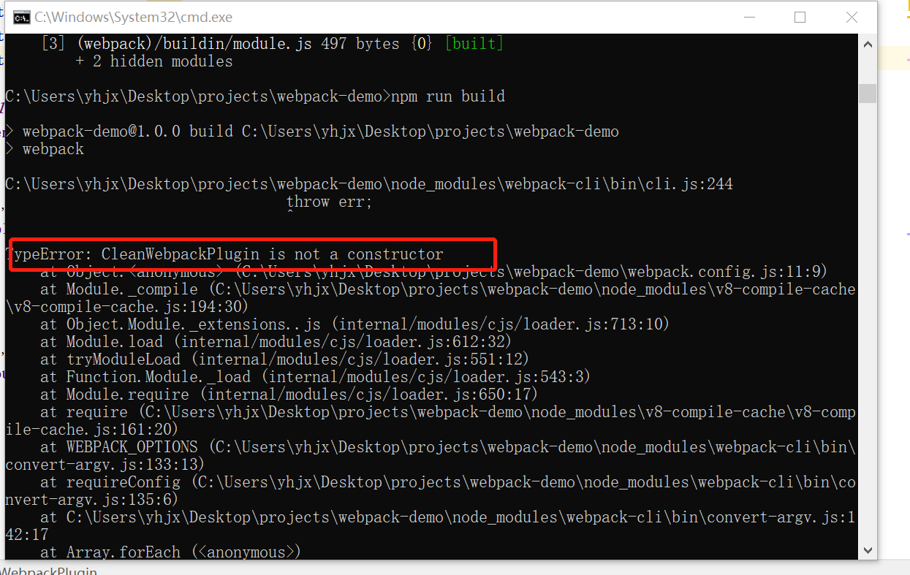
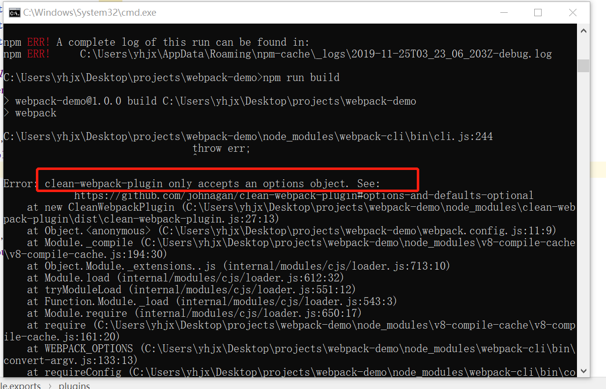

主要是使用clean-webpack-plugin引起的错误
npm install clean-webpack-plugin --save-dev
1.这么写就会就会引发第一个问题，是由于引入版本比较高导致的+ const CleanWebpackPlugin = require('clean-webpack-plugin');
plugins: [
+ new CleanWebpackPlugin(['dist']),
new HtmlWebpackPlugin({
title: 'Output Management'
})
]

这个错误告诉我们导入的类型不对，需要修改，给导入行加大括号解决
+ const {CleanWebpackPlugin} = require('clean-webpack-plugin');
plugins: [
+ new CleanWebpackPlugin(['dist']),
new HtmlWebpackPlugin({
title: 'Output Management'
})
]
2.然后运行还会引发第二个错误，这个错误告诉我们使用这个类参数得是一个对象

其实不填也可以，填一个空的{}也行，清除的目录会默认以输出口目录为准
const {CleanWebpackPlugin} = require('clean-webpack-plugin');
plugins: [
new CleanWebpackPlugin(),
new HtmlWebpackPlugin({
title: 'Output Management'
})
],